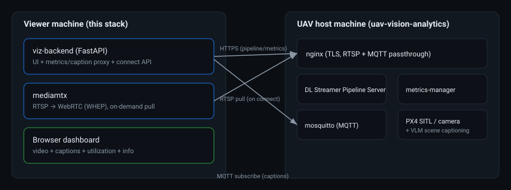

This viewer runs on a separate machine from the UAV stack. It iframes
the remote UAV host's own native WHEP viewer page
(https://<host>/webrtc/<path>/) directly for
live video — no local relay, no transcoding, no extra backend code
(only available while a *_caption pipeline variant, the
only ones that attach a native WebRTC destination, is running; see
LEGACY_STREAM_MODES.md for the MJPEG/WebRTC-Relay
fallbacks this project used to have instead). It also reads
pipeline/model info from the DL Streamer Pipeline Server's REST API,
proxies CPU/GPU/NPU utilization from metrics-manager, and
bridges scene captions from MQTT — all via nginx on the remote host.
